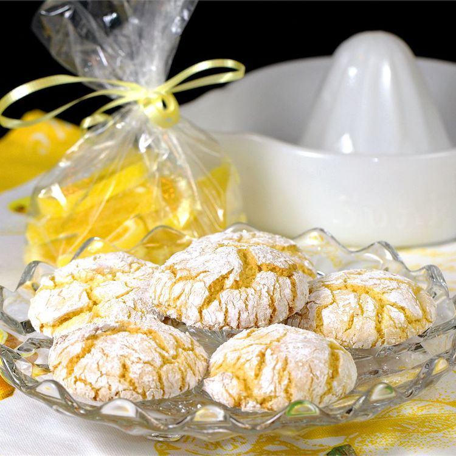

Easy Lemon Cookies

Description
Lemon cookies from cake mix. These sweet, tart crinkle cookies are easy to make with just five ingredients.
Prep time is 10 minutes and cook time is 10 minutes, for a total time of 20 minutes. This recipe will yield 36 cookies.
Ingredients
- 1 (15.25 ounce) package lemon cake mix
- 2 large eggs
- ⅓ cup vegetable oil
- 1 teaspoon lemon extract
- ⅓ cup confectioners' sugar for decoration
Directions
- Preheat the oven to 375 degrees F (190 degrees C).
- Pour cake mix into a large bowl. Stir in eggs, oil, and lemon extract until well blended.
- Working in batches, drop teaspoonfuls of dough into a bowl of confectioners' sugar. Roll dough in sugar until lightly coated, then place 2 inches apart onto non-greased cookie sheets.
- Bake in the preheated oven until the bottoms are light brown, 6 to 9 minutes.